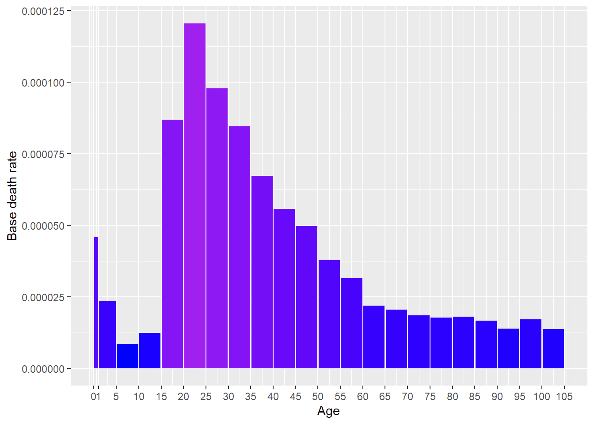

[auto-generated file]
Homicide is a death cause. It means that there is a certain probability that one dies from this.
Homicide has no risk factors in the model (yet).
In 2014 Homicide was responsible for 0.604% of the deaths in the US. Below is a plot of how prevalent the death was for different ages (Xu et al. 2016)

The definition of dying from Homicide is to get any of the following ICD codes as the main cause of death on one’s death certificate. The percentage is the proportion of the deaths from Homicide who falls under the ICD code
“ICD Order Files 2014.” n.d. https://www.cdc.gov/nchs/icd/icd10cm.htm.
Xu, Jiaquan, Kenneth D Kochanek, Sherry L Murphy, and Betzaida Tejada-Vera. 2016. “Deaths: Final Data for 2014.” National Vital Statistics Reports 65 (4).